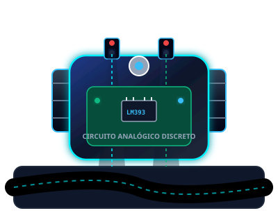
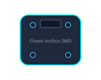
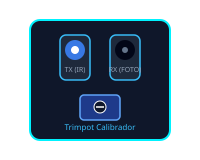
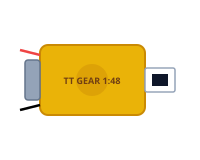
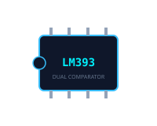
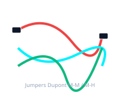

Video Principal y Extracción de Capturas
Integración del video tutorial experimental verificado (100% analógico sin Arduino) y catálogo de momentos clave analizados con marcas de tiempo exactas.
10 Momentos Clave Extraídos del Video
Cada captura se vincula con la marca de tiempo precisa del video y aporta evidencia visual para comprender las distintas secciones del proyecto.

00:151. Vista General del Robot Completo
Presenta el móvil completamente terminado sobre su chasis 2WD, mostrando la distribución equilibrada de baterías y protoboard.
▶ Ver Momento (00:15)
00:382. Materiales y Piezas Mecánicas
Muestra el kit de componentes antes del ensamble: chasis de acrílico con ranuras de ajuste, llantas de silicona y tornillería métrica.
▶ Ver Momento (00:38)3. Vista Inferior y Rueda Loca
Permite observar la ubicación inferior de la rueda esférica omnidireccional y el despeje libre con respecto al piso.
▶ Ver Momento (01:05)
01:424. Sensores IR y Trimpots Frontales
Detalle del soporte frontal que mantiene los emisores y receptores a 6 mm de la pista para optimizar el contraste de absorción.
▶ Ver Momento (01:42)
02:155. Motores DC y Ruedas Motrices
Montaje directo de los motorreductores tipo TT con reducción 1:48 atornillados al chasis con soportes metálicos.
▶ Ver Momento (02:15)
02:506. Circuito de Control LM393
Cableado del integrado comparador en el protoboard, mostrando las conexiones entre los divisores de tensión y las entradas inversoras.
▶ Ver Momento (02:50)
03:207. Conexiones y Transistores NPN
Interconexión de los transistores de conmutación 2N2222 y diodos de protección flyback hacia las terminales de los motores.
▶ Ver Momento (03:20)8. Desplazamiento Rectilíneo Estable
Ambos sensores detectan superficie clara a ambos lados de la cinta negra, manteniendo tracción simétrica hacia adelante.
▶ Ver Momento (04:05)9. Corrección Dinámica en Curva
El sensor interior toca la línea negra; el motor de ese flanco se corta inmediatamente y el chasis pivota hacia la trayectoria.
▶ Ver Momento (04:32)10. Prueba Final de Ciclo Completo
Validación experimental continua completando el circuito cerrado sin salirse de la línea ni perder sincronismo de marcha.
▶ Ver Momento (05:10)